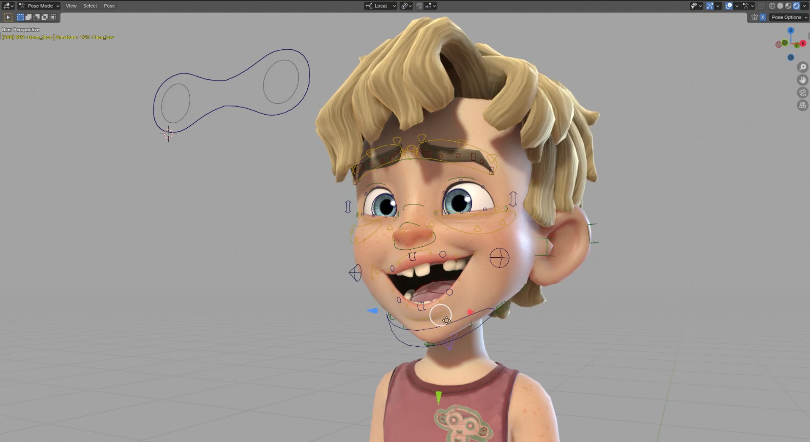
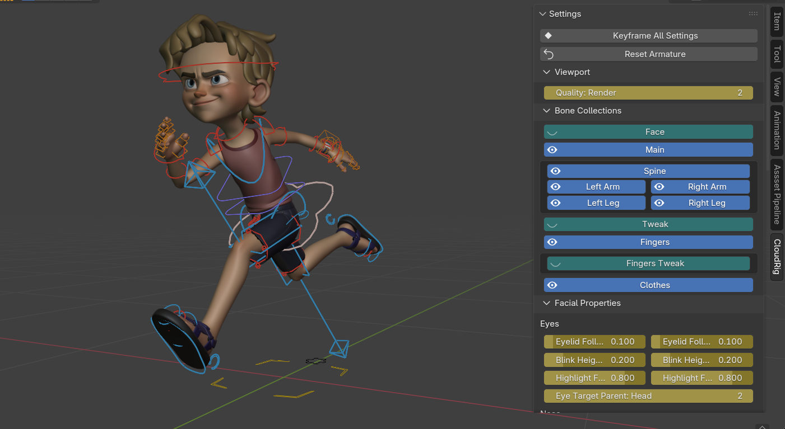

O curso de Animação 3D e Rigging para Videojogos é especializado na criação de animação 3D e nas técnicas de riggingRiggingProcesso de criação de uma estrutura interna, com ossos e controlos, que permite mover e animar personagens ou objetos 3D. para videojogos. Destina-se a quem pretende desenvolver competências em animação 3D para videojogos e ambientes interativosAmbientes InterativosAplicações ou experiências digitais em que o utilizador interage com o conteúdo, como videojogos, aplicações 3D e outros contextos em tempo real., adquirindo conhecimentos essenciais utilizados na indústria dos videojogos e da animação digital.

Os videojogos e a arte digital são uma das principais formas de entretenimento no mercado global atual, sendo a indústria dos videojogos uma das áreas tecnológicas e criativas com maior crescimento no mundo. Esta indústria está num período de crescimento exponencial, gerando milhares de milhões de euros anualmente e ultrapassando, em valor, as indústrias da música e do cinema combinadas.
Com esta formação, os formandos aprenderão as bases e fundamentos do desenho e animação 2D e 3D e desenvolverão competências técnicas em animação 3D, rigging e skinningSkinningProcesso que liga a malha 3D de uma personagem ao rig, permitindo que a geometria acompanhe corretamente os movimentos durante a animação. de personagens para videojogos, elementos fundamentais para a criação de personagens animadas e interativas.
Para uma personagem se poder mover, necessita de uma estrutura interna que lhe permita ter o controlo necessário para criar animações apelativas, naturais e tecnicamente corretas. Após aprender as técnicas de rigging e skinning, poderá mover objetos, animar personagens e otimizar a sua integração em videojogos e outros ambientes interativos.
A animação pressupõe a existência de algo. São necessários assetsAssetsElementos visuais ou sonoros utilizados num videojogo, como personagens, objetos, cenários, texturas, animações, interfaces ou efeitos., elementos visuais prontos a ser animados utilizados em videojogos, animação digital e projetos interativos, que requerem um estudo prévio, um conceito e uma fase de idealização. Após o conceito bem definido e estudado, segue-se a fase de modelação 3DModelação 3DProcesso de criação de objetos tridimensionais digitais que poderão ser utilizados em videojogos, animação e outros projetos interativos., bem como outras considerações técnicas e estilísticas que poderá aprofundar com o apoio do e-Tutor.

O curso foca-se na animação 3D com BlenderBlenderSoftware gratuito e open-source utilizado para criação 3D, incluindo modelação, animação, rigging, simulação e renderização., um dos softwares de criação 3D mais populares e completos da atualidade, amplamente utilizado na criação de animação digital, modelação 3D e desenvolvimento de conteúdos para videojogos.
Os formandos aprenderão, também, a desenhar tradicionalmente, a conceptualizar personagens, ambientes e elementos visuais, e a apresentar o seu trabalho de forma clara, estruturada e profissional, competências essenciais para artistas de videojogos.
Esta formação engloba o trabalho de um artista e designer na indústria de videojogos e da animação digital, sendo uma ferramenta essencial para quem pretende iniciar ou desenvolver uma carreira na área da animação 3D, rigging e criação de conteúdos para videojogos.
Na Master.D, além de manuais e recursos didáticos atualizados, terá acesso a um conjunto de ferramentas que enriquecem a sua aprendizagem, como webinars, masterclasses e workshops, permitindo aproximar-se da realidade da indústria e desenvolver competências práticas valorizadas no mercado.